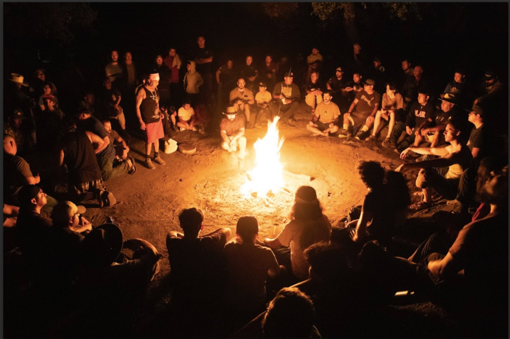
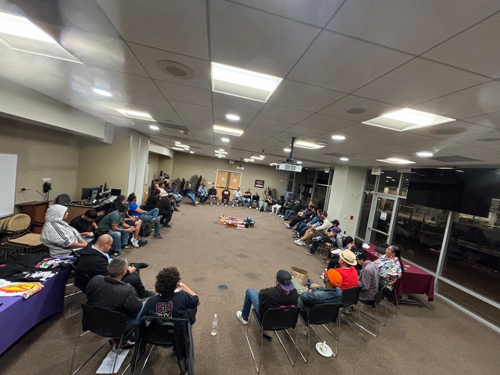
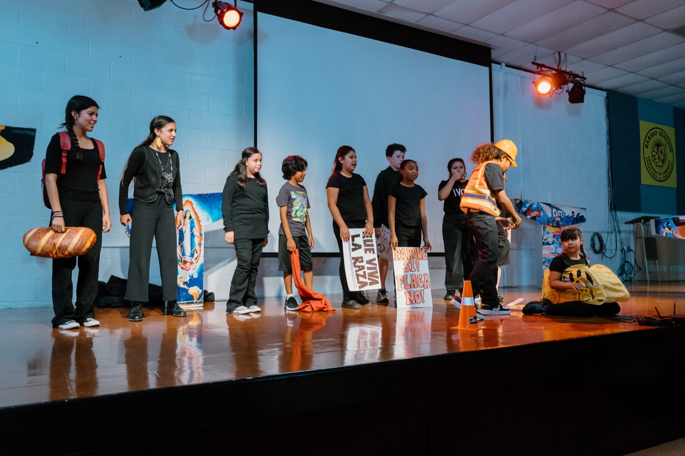
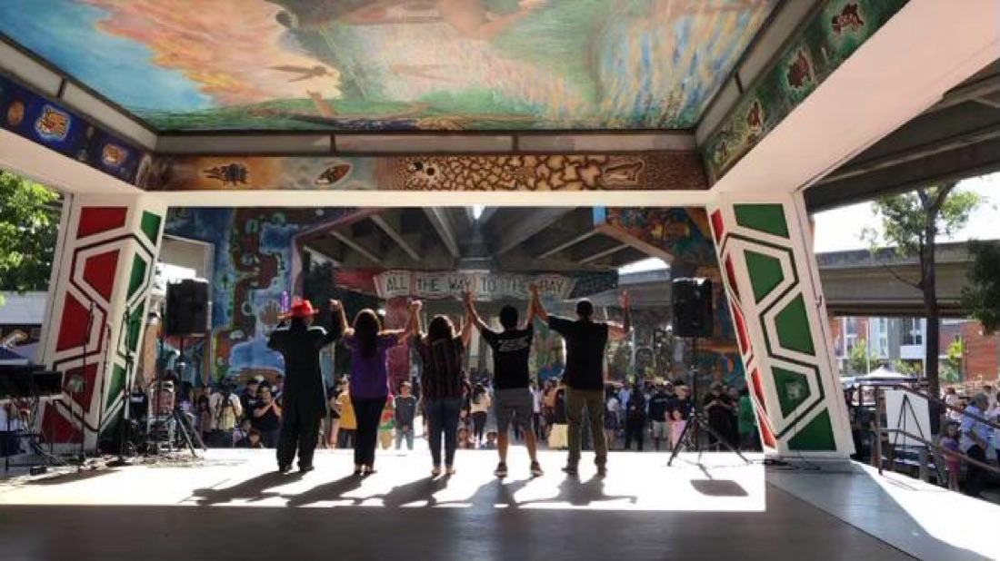
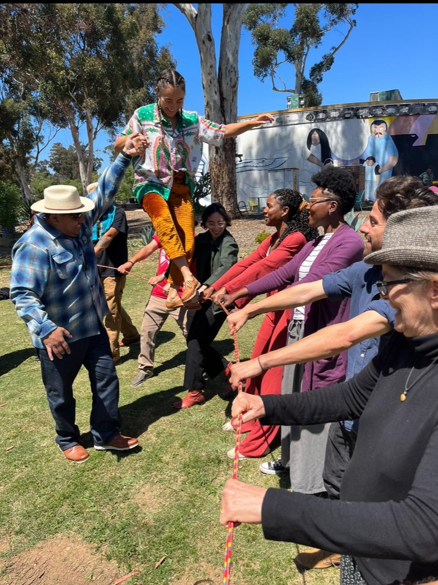

Our Mission
The mission of Izcalli is to transform the lives of Chicana/o and Indigenous communities by promoting cultural consciousness through the arts, education, and community dialogue.
What We Do

Weekly Indigenous circles — Círculo de Hombres and Cihua Ollin — in schools and community settings.

Youth from Barrio Logan and Logan Heights create and perform original theater on the theme of freedom at the Chicano Park Museum.

A Chicana/o comedy troupe carrying the tradition of La Carpa and Teatro Campesino since 1995.

Restorative rites-of-passage curriculum and trainings for educators and community leaders.
An annual multi-generational gathering on Kumeyaay land, paired with Cihua Ollin.

Our mural at Chicano Park carries Izcalli's name and Maya-Nahua imagery into the heart of Barrio Logan.
Featured
July 31 – August 2, 2026 · Manzanita Reservation, Kumeyaay land